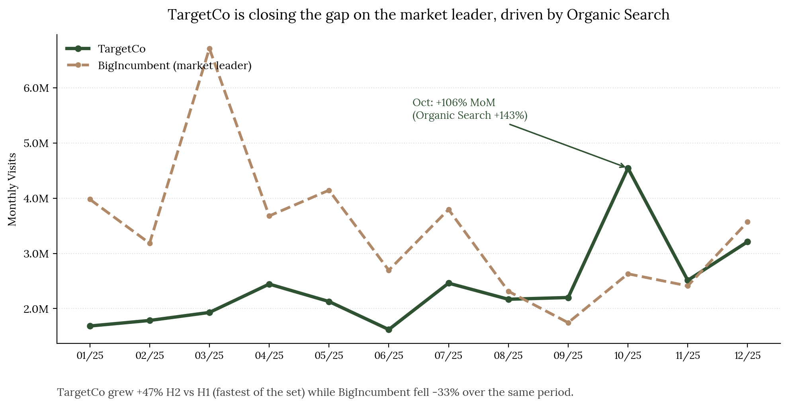

Competitor Web Traffic Analysis — Excel & Python
Objective
Analyze a year of web traffic data across five companies in a shared market, to identify the most defensible growth signal and produce an actionable, board-ready recommendation, in the context of a technical assessment for a data analytics role.
Method
- Workbook architecture: Raw Data is the only tab with typed-in values — every other tab references it via formula, zero hardcoded results. Excluded data points (e.g. a tracking outage month) were flagged rather than deleted, keeping every exclusion auditable.
- Scorecard design: built two parallel methodologies, equal-weighted and visit-weighted, to fairly compare companies ranging from 4M to 41M annual visits. Visit-weighting keeps the channels that actually drive the business proportionally represented. Both versions are kept visible in the output.
- Verification discipline: every number in the write-up was cross-checked against the workbook before submission. All formulas were recalculated to confirm zero errors, and every key figure was independently rebuilt in Python, matched to six decimal places against the Excel output.
Key finding
One company grew +47.5% in H2 vs. H1, the fastest momentum in the set, while the market leader fell -32.5% over the same period. Most of that growth traces to a single event: an October spike of +106% month-over-month, driven overwhelmingly by Organic Search (+143% that month).
Growth wasn't coming at the cost of traffic quality: the company posted the lowest bounce rate in the set and the second-highest pages-per-visit. By contrast, the company with the heaviest paid-search reliance had the worst bounce rate of the group — paid spend was buying volume, not engagement.

Recommendation
Don't chase the paid-media playbook. The organic channel is simultaneously the largest, fastest-growing, and highest-quality — the evidence points to doubling down on SEO/content investment rather than shifting budget toward paid acquisition.
How I used AI
I started out treating AI as an execution tool: describe the task, get a script, check the output. That broke down almost immediately, because the brief asked for judgment calls, not just processed numbers — and I couldn't defend a judgment call on something I didn't actually understand myself.
The shift: I stopped accepting formulas and decisions at face value, and had every one explained back to me, term by term, until I could reproduce the reasoning independently. The clearest example is the scorecard's weighting formula — I had each component broken down and re-derived the number myself before trusting it.
By the end, the working relationship had flipped from "produce this for me" to "defend this to me until I can defend it myself" — which is why I can trace every number and methodology choice back to its source and explain the reasoning without reading from a script.
Tools used
Excel (advanced formulas, scorecard modeling), Python (pandas, matplotlib, independent validation).